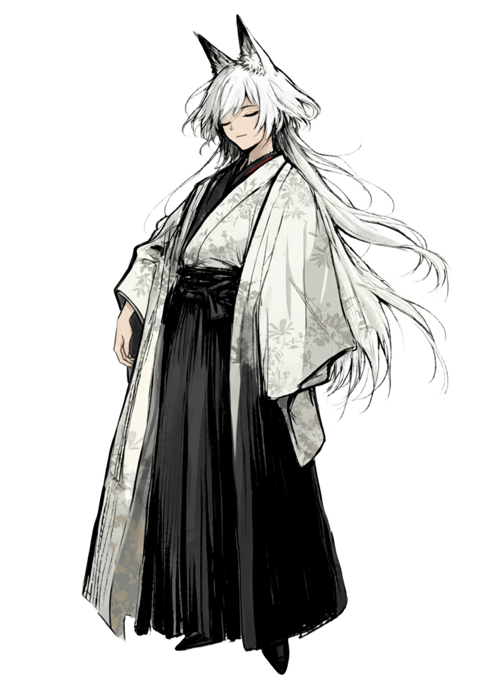

性格
落ち着いた雰囲気を持っている青年。盲目であり、いつも目を閉じている。ただし親しい人間に対しては相当に口が悪く、普段は猫を被っているだけらしい。綺麗好きであり、部屋を汚されたり大きな音を立てられたりすると怒る。
仕事について
彼は特に嗅覚が鋭敏であるため、ものが腐った臭いや人間の死体がとても苦手である。そのため彼は、街に存在する全ての不純物を掃除する仕事をしている。主には人の死体を片付けているが、依頼さえ入ればなんだって処分する。
過去
暗黒中華街で生まれ育った。幼少期からシロと交流があり、親代わりのように面倒を見てもらっていた。シロがまだ下級構成員であった時代から一緒に仕事をすることもあり、幹部になった今でも深い繋がりがある。
ある日街を歩いていたら、蒼殉街と白葬街の丁度あいだで死体のように転がっている人間を見つけた。死体は嫌いだから拾って捨てようとしたら、まだそれは生きていた。名前はなかったらしいので、白露と与えてやった。それが彼との出会いである。
能力
燈魅の特徴である狐の耳や鋭い五感を、先祖返りと言えるほど強く持っている。故に視覚がなくとも、音や匂い、触覚に依存して問題なく日常生活を送っている。他者に聞こえない音や空気の変化すら、彼には当然のように感じ取れる。